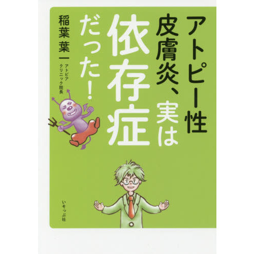
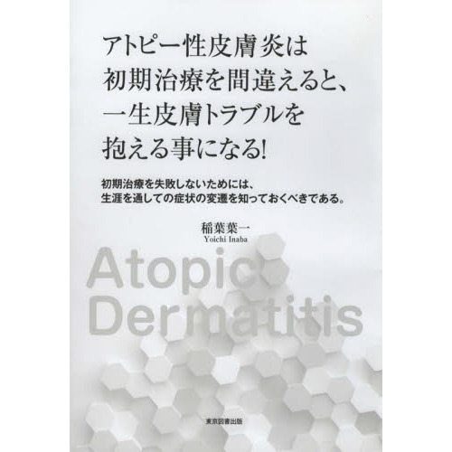

『アトピー性皮膚炎、実は依存症だった！』
アトピー専門医としての25年の臨床から、「掻き癖」という病気の本質に迫った一冊。 豊富な写真と図解で、掻かせないための三大原則「保湿・抑制・予測」をわかりやすく解説しています。
当院は完全予約制です。初診の方はお電話で、再診の方はWeb（24時間）でご予約いただけます。
Reservation
当院は完全予約制です。一人ひとりの診察時間をしっかり確保するため、ご来院前に必ずご予約をお願いいたします。
はじめての方
初診の方はWeb予約をご利用いただけません。診察の流れや持ち物のご案内も差し上げますので、お電話にてご予約ください。
096-349-2566受付時間：平日 10:00〜12:30／14:00〜17:00
再診の方
再診の方は、予約システム（ドクターキューブ）からいつでもご予約・変更いただけます。スマートフォンからもご利用いただけます。
Web予約ページへシステムの操作がご不安な方はお電話でも承ります。
初診はお電話、再診はWebまたはお電話でご予約ください。
ご予約時間の10分前までにお越しください。保険証（マイナ保険証）とお薬手帳をお持ちください。
症状と生活背景を丁寧にうかがい、治療方針とスキンケアの方法をわかりやすくご説明します。
Policy
アトピー性皮膚炎の悪化の中心には、「掻くから湿疹ができ、湿疹が痒いからまた掻く」という掻き掻き連鎖があります。 当院はこの連鎖を断ち切る「掻かせない治療」により、将来的に再発しない完全治癒をめざします。
対症療法
掻いてできた湿疹をステロイドで一時的に抑える治療。原因である「掻き癖」には手を付けないため、繰り返し再発し、徐々に悪化していくことがあります。
当院の根治療法
スキンケアを中心に「掻かない」状態をコントロールして湿疹そのものを予防。掻き癖を取り除き、薬に頼り続けない完全治癒をめざします。
保湿
肌のバリア機能を守り、痒みの起こりにくい肌環境を整えます。治療の土台となるスキンケアです。
抑制
掻く行動そのものを抑える工夫と指導で、湿疹の悪化と「掻き掻き連鎖」を断ち切ります。
予測
症状の変遷を先読みし、悪化する前に手を打ちます。生涯を通した経過を知る専門医だからできる治療です。
アトピー性皮膚炎は、乳児湿疹の段階で適切な治療を始めれば、完全治癒できる可能性が非常に高い病気です。 「そのうち治るだろう」と様子を見ているうちに掻き癖がついてしまう前に、どうか早めにご相談ください。
※根治療法は原則として乳幼児の方が対象です。成人の方の治療についてはお気軽にお問い合わせください。
Director
以来20年以上、アトピー性皮膚炎の専門診療に従事。その知見をまとめた著書を刊行しています。
Books
長年の臨床で得た知見を、患者さんとそのご家族、そして次世代の医師に向けて書籍にまとめています。

アトピー専門医としての25年の臨床から、「掻き癖」という病気の本質に迫った一冊。 豊富な写真と図解で、掻かせないための三大原則「保湿・抑制・予測」をわかりやすく解説しています。

「初期治療を失敗しないためには、生涯を通しての症状の変遷を知っておくべきである」—— アトピー診療にあたる若い医師たちへ向けた実践マニュアル。当院の治療哲学が凝縮されています。
Information
| 平日 | 土曜 | 日曜（第1・3のみ） | |
|---|---|---|---|
| 午前 | 10:00〜12:30 | 10:00〜12:30 | 9:00〜13:00 |
| 午後 | 14:00〜17:00 | 14:30〜16:30 | − |
〒869-1101
熊本県菊池郡菊陽町津久礼2422-4
カリーノ菊陽 2階
乳児湿疹かな？と思ったら、まずはご相談ください。早いご相談が、完全治癒への近道です。